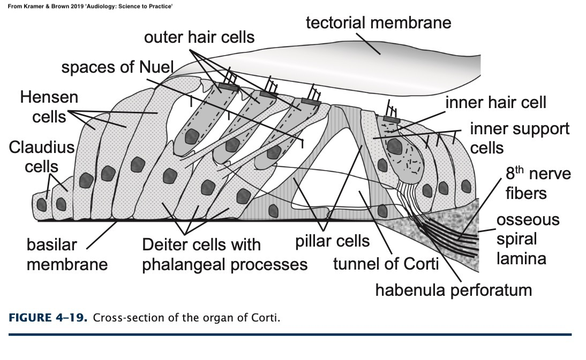

Questions about class material
Course Overview
Your future in hearing science
We exist in a constant field of air pressure fluctuations
These fluctuations have periods, frequencies, wavelengths, amplitudes, and phase
<img class=“

We need to understand the physical world around us
But our brains are trapped in a vat of fluid in the dark
Hearing is the process of ‘transducing’ these fluctuations into useful and usable signal to understand the world
… and this happens because…




Three different transductions
Tens of different anatomical elements
Numerous points of failure
… and a variety of mysteries even to modern medicine!
OMG hearing works ever at all
This is AMAZING!
Treasure every bit of your hearing!
Sounds can mask our hearing of other sounds
Our anatomy increases the power of some frequencies
Our cochlea amplifies the signal further
Pitch isn’t frequency, Loudness isn’t amplitude
Distortions help us to understand their sources and locations
… but it’s flawed for good reasons!
These distortions focus our attention on the things that matter in our environment
These distortions define and enable the process of human hearing!
Any breakdown in the system can damage our hearing
… and damaged hearing can negatively impact many lives
2-3 of every 1000 children are born with detectable hearing loss
~15% of American adults have some hearing trouble
5 out of 6 of children have otitis media by the time they’re 3 years old
They help to detect hearing pathologies with examinations
Audiometry helps to characterize the nature of hearing loss
… and audiologists coordinate with doctors to address more serious disorders
Perhaps it’s just knowledge of the loss, and encouragement towards sign
Perhaps it’s a hearing aid or two
Maybe there’s a surgical intervention that can help
Maybe even CIs
Or perhaps the best choice is to focus on living a full life in the deaf community
You might consider a future in hearing science, audiology or hearing medicine
You could stay in linguistics, focusing in phonetics and speech perception
Perhaps you’ll move on to other spoken language work
… or maybe you’ll go on and do something else altogether
This is a class I’ve wanted to teach since I’ve wanted to teach
You’ve put in incredible work
… I’ve appreciated your understanding during the bumpy bits
That you learned a great deal about hearing
That you’ll never have firsthand knowledge of any of these disorders
That you have a newfound appreciation for a ‘boring’ sense
… and that you’re kind to your ears